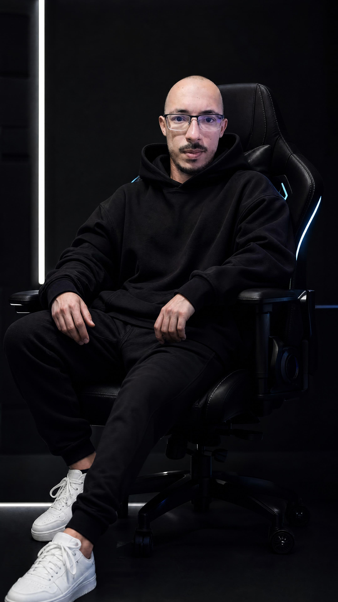

Autoridade editorial
Imagem sóbria para transmitir confiança, postura e seriedade sem parecer banco de imagem.
Tráfego pago com automação para transformar campanhas em conversas qualificadas no WhatsApp — com método, criativos melhores e leitura de dados semanal.
Estrutura pensada para canais onde o cliente realmente converte
Autoridade, consultoria premium e automação — cada bloco com uma imagem que conversa com a proposta.
Imagem sóbria para transmitir confiança, postura e seriedade sem parecer banco de imagem.
Visual de especialista que conversa com donos de negócio e prestadores de serviço.

Bloco mais tecnológico para conectar tráfego pago, IA, processos e velocidade operacional.
O foco não é só clique bonito. É campanha com intenção, criativo com mensagem certa e acompanhamento para cortar desperdício.
Oferta, público, verba, canais, página, WhatsApp e gargalos antes de gastar mais.
Meta Ads e Google Ads estruturados com objetivo claro: gerar conversa qualificada.
Leitura semanal de CPL, CTR, CPM, criativos e qualidade dos leads para ajustar rápido.
Me chama no WhatsApp. A gente avalia sua oferta, define o canal ideal e monta um plano simples para começar com clareza.